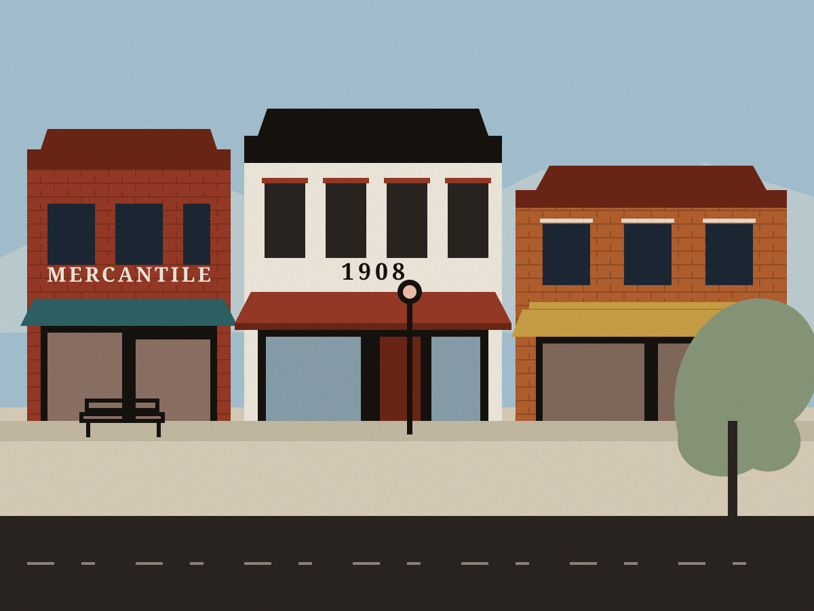
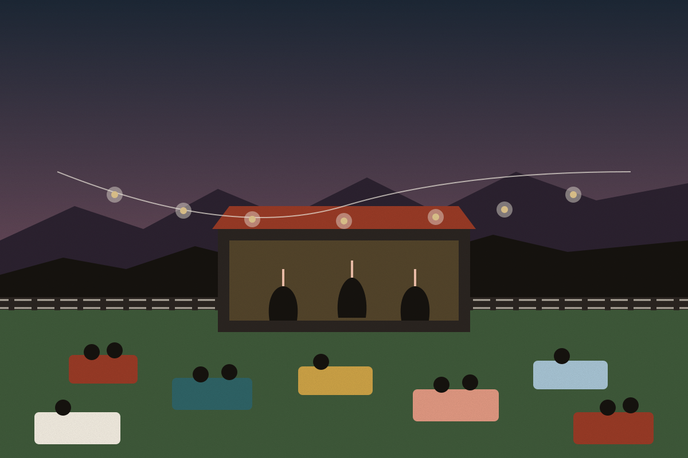
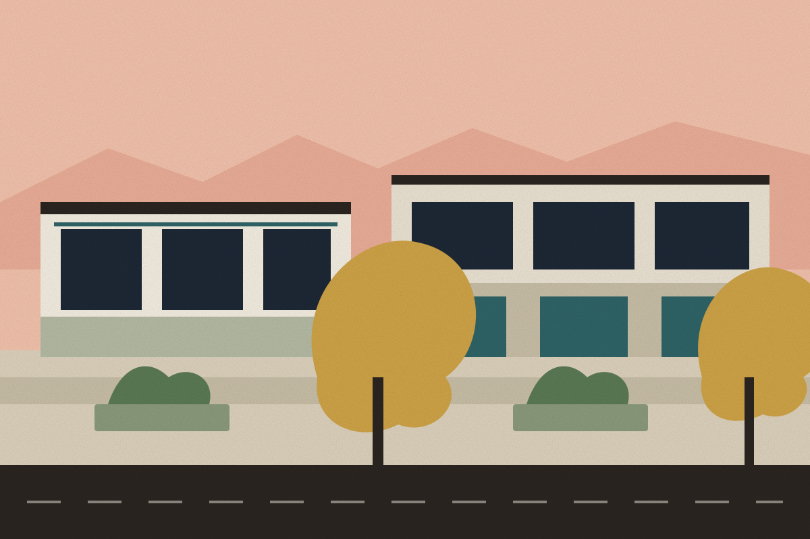
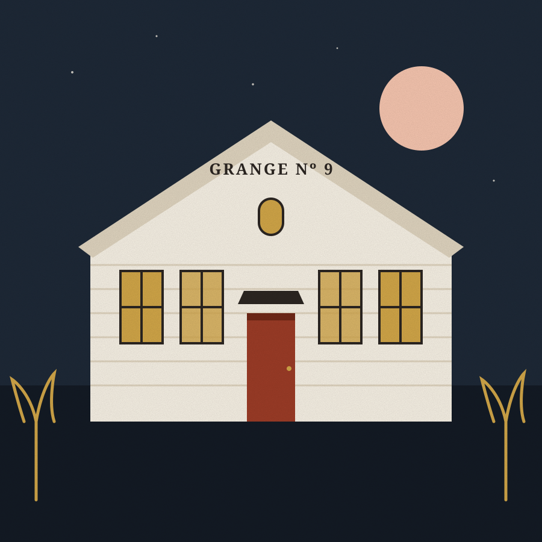
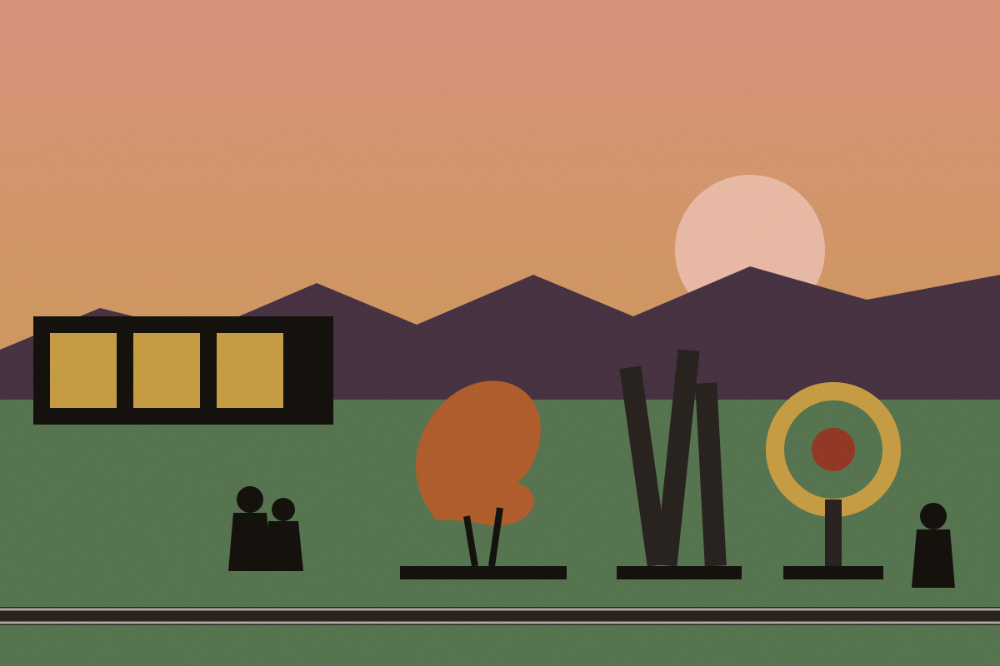

Boulder County, Colorado · Elev. 5,095 ft
Come for the view. Stay for the Curse.
Niwot is a railroad town from 1873, laid out along the tracks between Boulder and Longmont, in full view of the Flatirons. Legend says the valley is so beautiful that people who see it never leave.
The legend
The Niwot Curse.
Words attributed to Chief Niwot, spoken to the gold-seekers of 1858.
Locals just call it the Niwot Curse. Every generation since has tested it and every generation has lost. The farmers stayed. The railroad crews stayed. The antique dealers, the potters, the brewers and the Thursday-night concert crowds all stayed. Consider yourself warned.
Four corners of town
Small in scale. Enormous in character.
Everything in Niwot is a short walk from the tracks. Start at any of these four and the rest of town will find you.

01 · Old Town
Historic 2nd Avenue
Brick, false fronts and iron cornices from the 1870s to the 1910s, still full of antique dealers, galleries, a tavern and a bakery. A Boulder County historic district since 1993.
Walk the avenue →
02 · Trackside
Whistle Stop Park
A pocket of lawn where the depot used to stand. Home of Rock & Rails on summer Thursday nights, when the whole town shows up with a blanket.
See the lineup →
03 · New Town
Cottonwood Square
Niwot's modern side, landscaped and low-slung: the market, coffee, restaurants and everyday services, a few minutes from the tracks.
Old town vs. new town →
04 · Gathering place
Left Hand Grange
Grange No. 9 has anchored community life on 2nd Avenue for more than a century: dances, meetings, markets and the occasional wedding.
Get involved →5,095ft
Elevation. High enough for alpenglow, low enough for peaches.
1873
The year the Colorado Central laid rail between Boulder and Longmont and a town appeared beside it.
Chief Niwot's valley
One creek. Four chapters.
Two towns, one street
Old Town brick. New Town cottonwoods.
Second Avenue keeps the 1875 plat and the storefronts that came with it. A few blocks away, Cottonwood Square handles the modern errands. Both close early. Neither is in a hurry.
Along the avenue
Independent, owner-run and mostly one of a kind. Hover a category to see where it lives. The Niwot Business Association keeps the current directory.
Full business directoryThursday nights at Whistle Stop Park
Rock & Rails
Free concerts on the lawn beside the tracks, June through August. Bring a chair, buy a beer from the nonprofit tent, and wave when the train comes through. It always does.
First Fridays & the Sculpture Park
Art, trackside.
Galleries on 2nd Avenue stay open late on the first Friday of the month. Between them, a rotating sculpture park runs along the railroad right-of-way, so the walk itself is the exhibit.

- 1
Galleries & studios
Start on the west end of 2nd Avenue. Painters, potters and jewelers keep studios above and behind the storefronts.
- 2
Sculpture Park
Cross to the tracks. Large-scale work on loan from Colorado artists, rotated every year or two.
- 3
Whistle Stop Park
End on the lawn. On concert nights, this is where the walk turns into a party.
- 4
Left Hand Grange
Check the Grange board for shows, markets and the occasional community dance.
Stay in touch
Already cursed? Get involved.
Niwot is unincorporated, so the town runs on its associations, its Grange and its volunteers. These are the people to talk to.
- Business & eventsNiwot Business AssociationDirectory, calendar, Rock & Rails, First Fridays.
- NeighborsNiwot Community AssociationCommunity updates, local history and civic life.
- Gathering placeLeft Hand Grange No. 9Hall rentals, meetings, markets and dances on 2nd Avenue.
- County servicesBoulder CountyRoads, permits, open space and trails.
- OutsideNiwot TrailsLoops through the fields and along Left Hand Creek.
- Election 2026Niwot IncorporationOfficial ballot language and dates from the Niwot Election Commission.